Línea del tiempo
México ante las intervenciones extranjeras · 1838–1867
Primera Intervención Francesa
Guerra de los Pasteles
Tras la Independencia, México vivía inestabilidad política, deudas y conflictos internos. Durante las revueltas, comerciantes franceses establecidos en el país sufrieron daños y presentaron reclamaciones. El gobierno mexicano respondió que no estaba obligado a pagar daños causados por las facciones en pleito, y Francia usó esas reclamaciones como pretexto de presión. En 1838 el presidente era Anastasio Bustamante.
El caso del pastelero Remontel
Después de la Independencia, varios comerciantes franceses que vivían en México se quejaron por los daños que sufrieron durante los conflictos internos. Uno de los casos más conocidos fue el de Remontel, dueño de una pastelería, que reclamó una indemnización por los destrozos en su negocio. Pero otras fuentes cuentan que oficiales mexicanos se fueron sin pagar y que la queja se presentó hacia 1832. Su caso fue más simbólico que decisivo: el reclamo total de Francia llegó a 600,000 pesos. Aun así, el pastelero dio nombre popular al conflicto: la Guerra de los Pasteles.
Lugar: Ciudad de México (algunas fuentes dicen Tacubaya).
Causas: daños en revueltas internas.
Consecuencias: el caso dio nombre al conflicto.
El ultimátum francés
Desde 1836 el gobierno francés, por medio de su ministro en México, el barón Antoine Deffaudis, pidió que se pagaran las reclamaciones de sus ciudadanos. México respondió que no tenía obligación de indemnizar daños causados por las facciones políticas en pleito. En enero de 1838 Deffaudis pidió sus pasaportes y salió de la capital hacia Veracruz. Francia envió después una flota de guerra y presentó un ultimátum: pagar 600,000 pesos y dar garantías a los franceses residentes, con plazo hasta el 15 de abril de 1838. El gobierno del presidente Anastasio Bustamante no aceptó las condiciones.
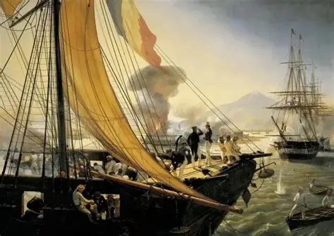
Lugar: Ciudad de México y Veracruz.
Causas: reclamaciones económicas y presión diplomática.
Consecuencias: el rechazo mexicano llevó al bloqueo.
Bloqueo de Veracruz
Cuando venció el ultimátum, la escuadra francesa comenzó el bloqueo del puerto de Veracruz el 16 de abril de 1838, el almirante Bazoche también bloqueó Tampico. El bloqueo afectó el comercio por mar y la economía de un país que ya estaba en crisis. México seguía negándose a pagar, y Francia mandó más barcos bajo el mando del contraalmirante Charles Baudin, que llegaron a finales de 1838. El bloqueo duró casi un año, hasta el 9 de marzo de 1839.
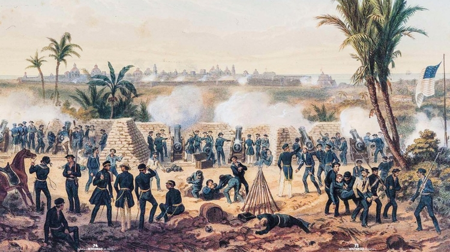
Lugar: puerto de Veracruz.
Causas: negativa mexicana a pagar.
Consecuencias: comercio dañado y presión sobre el gobierno.
Ataque a San Juan de Ulúa
A finales de 1838 llegó la escuadra del contraalmirante Charles Baudin con nuevas exigencias: los 600,000 pesos y, una cantidad adicional por los gastos de la flota. Como México no aceptó, las fuerzas francesas abrieron fuego contra la fortaleza de San Juan de Ulúa, la principal defensa del puerto de Veracruz. La fortaleza no pudo resistir y capituló ante los franceses, que quedaron en posición ventajosa frente al puerto. Poco después el gobierno de Bustamante declaró la guerra a Francia.
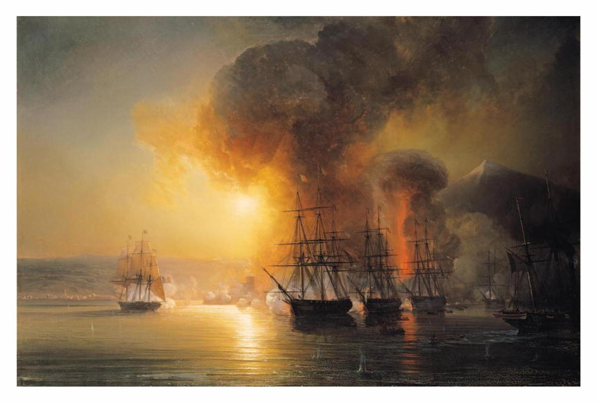
Lugar: San Juan de Ulúa, Veracruz.
Causas: rechazo de las exigencias francesas.
Consecuencias: capitulación de la fortaleza y paso a la guerra abierta.
Santa Anna defiende Veracruz
Después de la capitulación, las tropas francesas desembarcaron en Veracruz el 4 de diciembre de 1838 y trataron de tomar el puerto. El general Antonio López de Santa Anna, que había salido de su hacienda para revisar las defensas, tomó el mando y logró que los franceses se replegaran, aunque no tenía fuerza para romper el bloqueo. En el combate, un disparo de cañón francés lo hirió gravemente en la pierna izquierda, que le fue amputada. Más tarde usó una prótesis de madera. El general Mariano Arista fue hecho prisionero. Aun sin romper el bloqueo, Santa Anna ganó prestigio político.
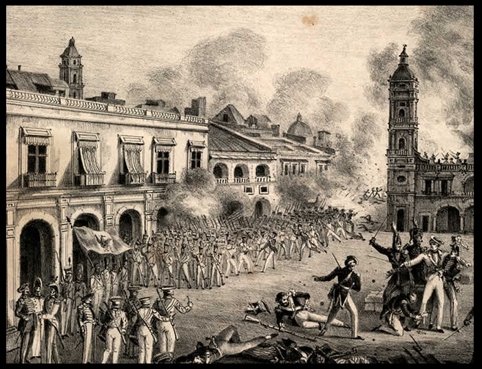
Lugar: Veracruz.
Causas: desembarco francés tras la caída del fuerte.
Consecuencias: Santa Anna herido, más prestigio político para él.
La mediación británica
Como el bloqueo también afectaba a intereses de otros países europeos, Gran Bretaña envió su flota de las Indias Occidentales para mediar. El diplomático británico Richard Pakenham reunió a Charles Baudin con los representantes de México, Guadalupe Victoria y Manuel Eduardo de Gorostiza. Las negociaciones se desarrollaron a comienzos de 1839, mientras seguía el bloqueo. Era una salida para México, que no podía romper el bloqueo por la fuerza. Esta mediación evitó que continuaran los combates y abrió el camino a un acuerdo.
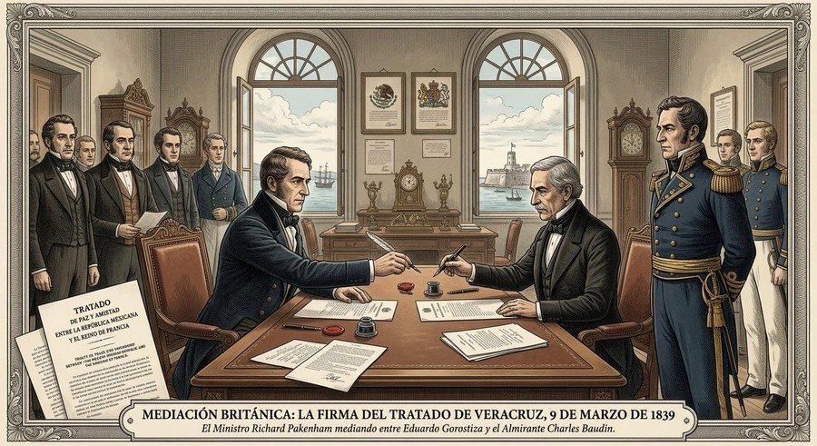
Lugar: Veracruz.
Causas: bloqueo prolongado e intereses británicos.
Consecuencias: acuerdo de paz.
Tratado de Paz
El 9 de marzo de 1839 México y Francia firmaron en Veracruz el Tratado de Paz, con lo que terminó la Primera Intervención Francesa, según el INEHRM. México se comprometió a pagar 600,000 pesos por las reclamaciones de los franceses, pero no aceptó dar garantías especiales a los extranjeros en el futuro. Francia levantó el bloqueo, dejó de cobrar los gastos de la guerra y devolvió el fuerte de San Juan de Ulúa y las naves mexicanas que había capturado.
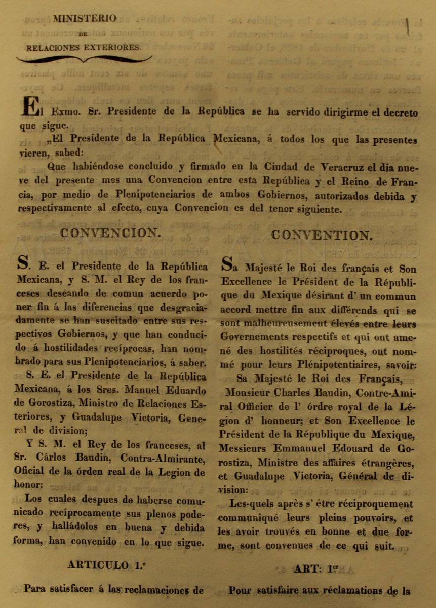
Lugar: Veracruz.
Causas: agotamiento del bloqueo y mediación.
Consecuencias: pago de 600,000 pesos y fin del bloqueo.
| Nombre | Cargo | Papel |
|---|---|---|
| Antonio López de Santa Anna | General mexicano | Defendió Veracruz; perdió la pierna izquierda |
| Anastasio Bustamante | Presidente de México | Rechazó el ultimátum francés |
| Remontel | Pastelero francés | Su reclamo dio nombre al conflicto |
| Antoine Deffaudis | Ministro de Francia en México | Presentó las exigencias y el ultimátum |
| Charles Baudin | Contraalmirante francés | Dirigió el ataque y negoció la paz |
| Mariano Arista | General mexicano | Fue hecho prisionero en Veracruz |
| Guadalupe Victoria y Manuel E. de Gorostiza | Representantes de México | Negociaron el tratado |
| Richard Pakenham | Diplomático británico | Mediador |
- Económicas: México pagó 600,000 pesos y el comercio sufrió por el bloqueo.
- Militares: quedó clara la vulnerabilidad de las costas mexicanas.
- Políticas: Santa Anna ganó prestigio.
- Diplomáticas: terminó el bloqueo y se restablecieron las relaciones entre ambos países.
- Daños a Remontel: 1828 (INEHRM) o queja hacia 1832 (otras).
- Ataque a San Juan de Ulúa: 27 de noviembre (INEHRM y FCE) o 21 de noviembre, con capitulación al día siguiente (Milenio, Wikipedia).
- Duración del bloqueo: casi un año (INEHRM); algunas notas hablan de ocho meses.
- Herida de Santa Anna: 5 de diciembre.
- Tratado: 9 de marzo (INEHRM) o 21 de marzo (otras fuentes).
Intervención Norteamericana
Guerra México–Estados Unidos
Después de la Independencia, México vivía inestabilidad política y económica, y le costaba organizar y defender sus enormes territorios del norte, como Texas, California y Nuevo México. Esa debilidad y el interés de Estados Unidos por expandirse llevaron a la guerra. Polk fue presidente de Estados Unidos del 4 de marzo de 1845 al 4 de marzo de 1849.
Colonos y tensiones en Texas
Después de la Independencia, México tenía territorios enormes en el norte, con poca población y difíciles de defender. En Texas se permitió que colonos, muchos de ellos estadounidenses, se establecieran con permiso del gobierno mexicano. Con los años creció la población extranjera y aumentaron las diferencias con México, que además atravesaba inestabilidad política y económica. En 1835 estalló la rebelión de los texanos contra el gobierno mexicano. Estas tensiones fueron la base de la guerra de 1846.
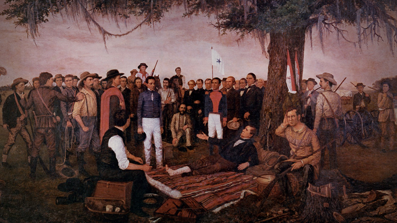
Lugar: Texas.
Causas→Consecuencias: diferencias políticas → rebelión de 1835.
Independencia de Texas y San Jacinto
El 2 de marzo de 1836 Texas declaró su independencia de México. El 21 de abril, en la batalla de San Jacinto, las fuerzas texanas de Samuel Houston derrotaron al ejército mexicano y capturaron a Antonio López de Santa Anna. En mayo Santa Anna firmó los Tratados de Velasco, pero México nunca los reconoció y siguió considerando a Texas una provincia rebelde. La República de Texas existió de 1836 a 1846. Quedó sin resolver cuál era la frontera entre Texas y México.
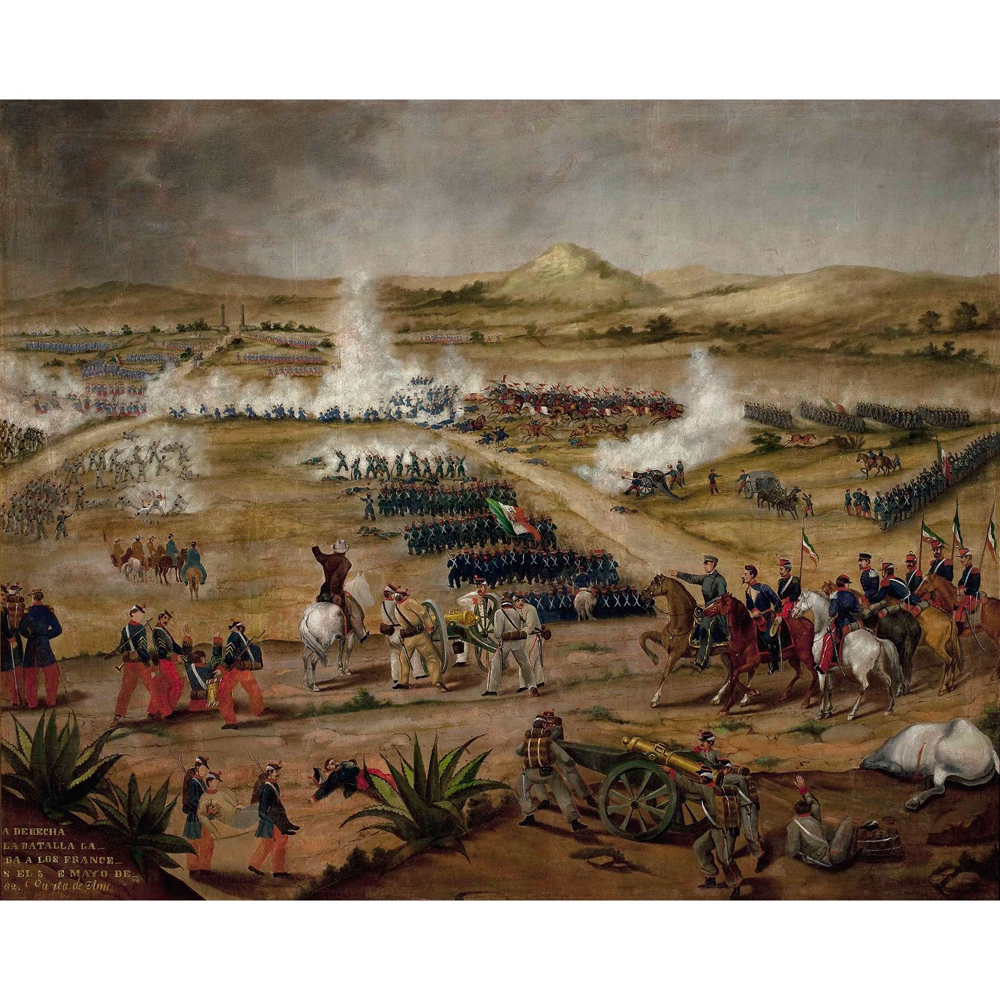
Lugar: San Jacinto, Texas.
Causas→Consecuencias: rebelión texana → república independiente no reconocida.
Anexión de Texas
Estados Unidos aprobó la anexión de Texas el 26 de febrero de 1845, antes de que Polk asumiera la presidencia, y Texas fue admitido como estado número 28 el 29 de diciembre de 1845. México nunca había reconocido la independencia texana y rechazó la anexión. Con ella se agravó el problema de la frontera: Estados Unidos y Texas defendían el río Bravo (Grande) como límite, mientras México defendía el río Nueces. Así quedó una franja disputada entre ambos ríos.
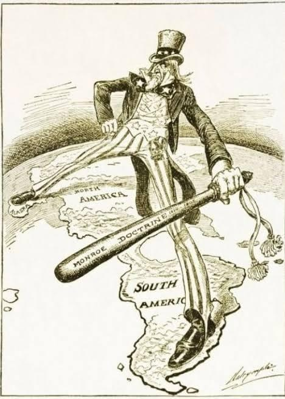
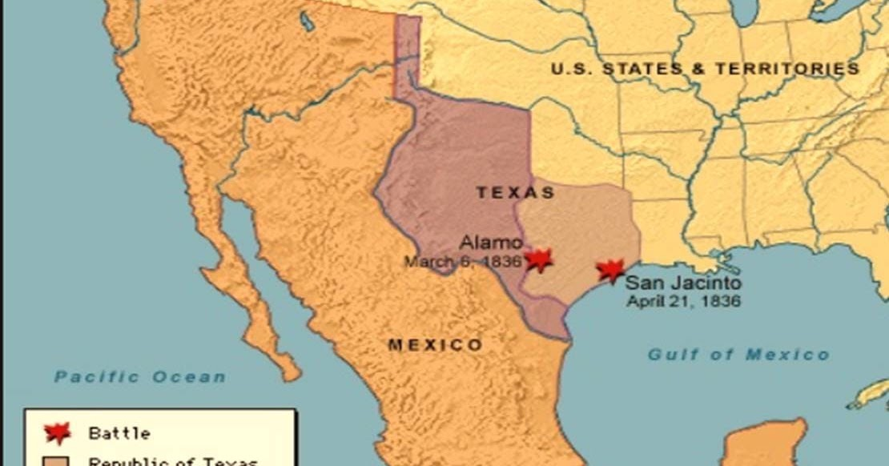
Lugar: Texas.
Causas→Consecuencias: expansión estadounidense → disputa fronteriza.
La misión de John Slidell
Después de la anexión, Polk envió a John Slidell a México para negociar la frontera de Texas y comprar territorios mexicanos. Una fuente indica que podía ofrecer hasta 25 millones de dólares. El gobierno mexicano se negó a recibirlo como ministro y la misión fracasó en mayo de 1846. Para Estados Unidos, el fracaso mostró que no obtendría esos territorios negociando; para México, la propuesta era una amenaza a su territorio. Esto aumentó las tensiones antes de los primeros combates.
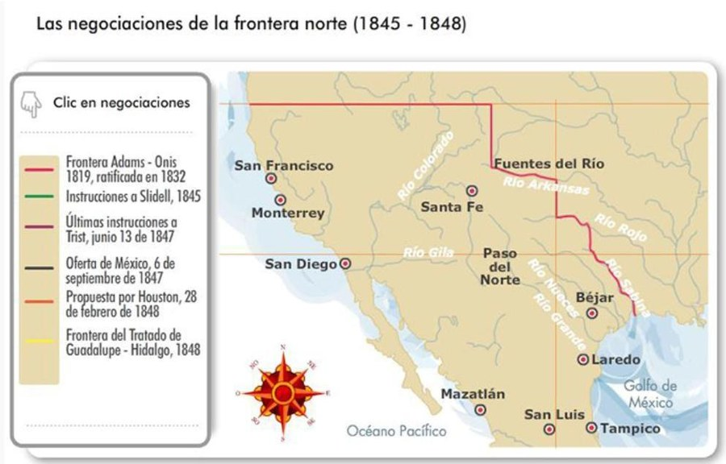
Lugar: Ciudad de México.
Causas→Consecuencias: interés en California y Nuevo México → negociación fracasada.
La zona disputada: Nueces y Bravo
Polk ordenó a Zachary Taylor marchar hacia el río Bravo para proteger Texas. En marzo de 1846 las tropas de Taylor avanzaron por la franja entre el Nueces y el Bravo, que México consideraba suya, y se instalaron frente a Matamoros, donde levantaron el Fuerte Texas. Para México era una invasión de su territorio; para Estados Unidos, la defensa de Texas. Esta presencia militar frente a frente hizo que cualquier incidente pudiera convertirse en guerra.
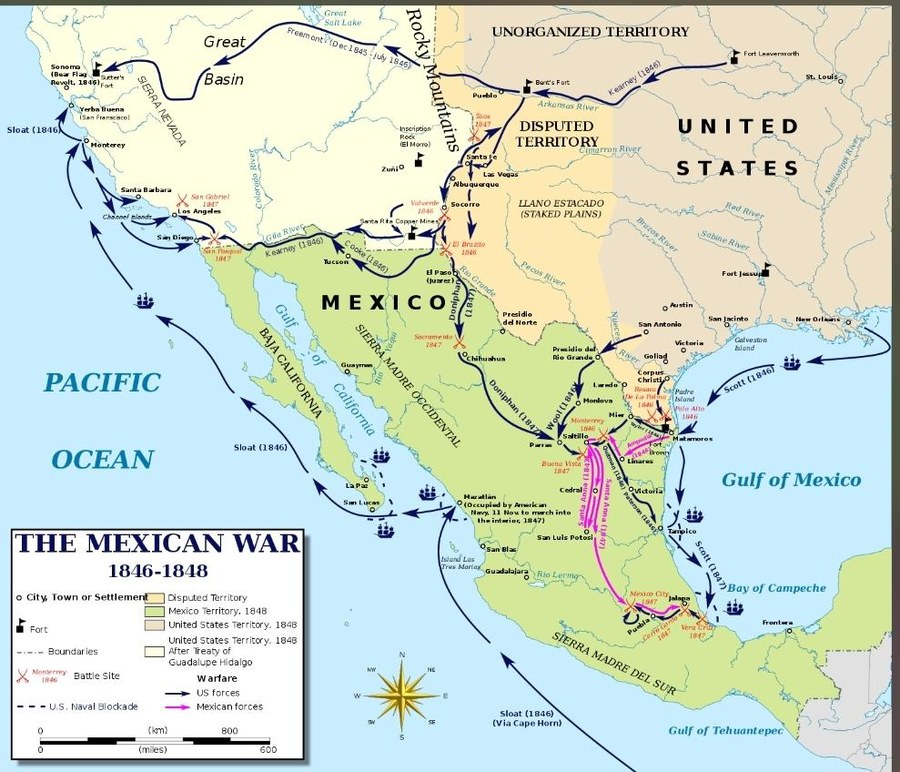
Lugar: entre el Nueces y el Bravo; Matamoros.
Causas→Consecuencias: frontera discutida → choques armados.
El asunto Thornton
El 25 de abril de 1846, en Rancho de Carricitos, cerca del río Bravo, una fuerza mexicana al mando del general Anastasio Torrejón emboscó a una patrulla de dragones estadounidenses dirigida por el capitán Seth Thornton, que fue hecho prisionero. México decía que Thornton había cruzado a su territorio; Estados Unidos, que estaba en Texas. Taylor informó a Polk, quien usó el hecho para afirmar que se había derramado sangre estadounidense en suelo estadounidense y pedir la guerra.

Lugar: Rancho de Carricitos.
Causas→Consecuencias: frontera disputada → petición de guerra.
Batalla de Palo Alto
Tras el asunto Thornton, el general Mariano Arista cruzó el río Bravo y el 3 de mayo comenzó a bombardear el Fuerte Texas. Taylor marchó a socorrer el fuerte y el 8 de mayo las dos fuerzas se enfrentaron en Palo Alto, a unos kilómetros del actual Brownsville, Texas. Fue la primera gran batalla de la guerra. La artillería estadounidense fue muy efectiva y los mexicanos se replegaron. La batalla ocurrió tres días antes de la declaración formal de guerra de Estados Unidos.
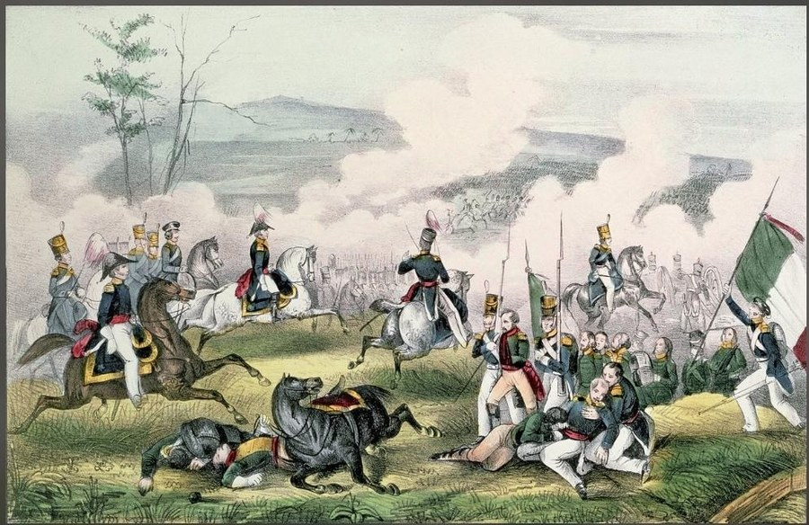
Lugar: Palo Alto, cerca de Brownsville.
Causas→Consecuencias: sitio del Fuerte Texas → victoria estadounidense.
Resaca de Guerrero (Resaca de la Palma)
Al día siguiente de Palo Alto, Arista se atrincheró en una resaca, es decir, un cauce seco del río, cerca del Fuerte Texas. Allí Taylor volvió a derrotar al ejército mexicano, que tuvo que retroceder al otro lado del río Bravo. La victoria permitió liberar el Fuerte Texas, que resistía el sitio. Los dos triunfos de Taylor lo volvieron famoso en Estados Unidos. En México la batalla se conoce como Resaca de Guerrero y en Estados Unidos como Resaca de la Palma.
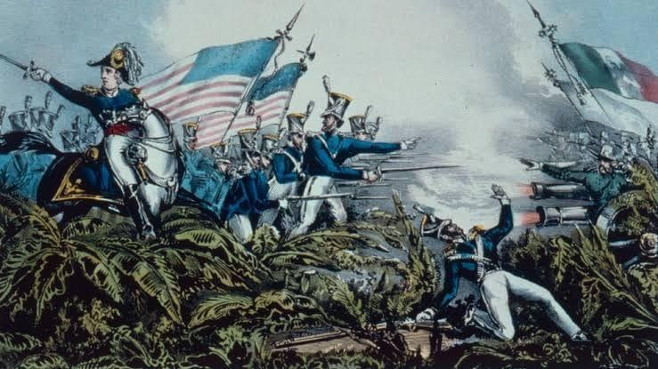
Lugar: cerca de Brownsville y Matamoros.
Causas→Consecuencias: repliegue de Palo Alto → mexicanos cruzan el Bravo.
Estados Unidos declara la guerra
Polk envió un mensaje al Congreso el 11 de mayo diciendo que México había invadido territorio estadounidense. Dos días después, el 13 de mayo de 1846, el Congreso aprobó la declaración formal de guerra y autorizó 50,000 voluntarios. Es importante notar que los primeros combates ya habían ocurrido antes. Algunos críticos, entre ellos grupos contrarios a la esclavitud, dijeron que Polk provocó la guerra para ganar más territorio. Las tropas de Taylor ocuparon Matamoros el 18 de mayo, sin combate.
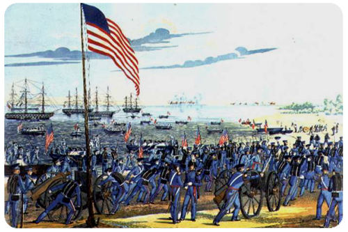
Lugar: Washington.
Causas→Consecuencias: asunto Thornton y batallas → guerra declarada.
Batalla de Monterrey
El ejército de Zachary Taylor avanzó hacia Monterrey y combatió contra las fuerzas mexicanas del general Pedro de Ampudia del 20 al 24 de septiembre de 1846. Los combates fueron duros y terminaron con una rendición negociada y un armisticio de ocho semanas. Monterrey quedó en manos estadounidenses, lo que les dio el control de una ciudad clave en el norte.
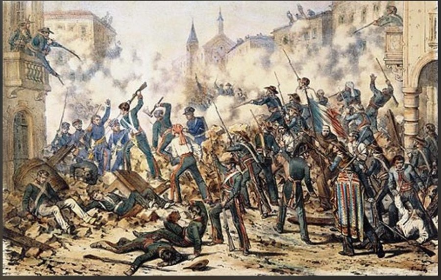
Lugar: Monterrey, Nuevo León.
Causas→Consecuencias: avance al interior → control del norte.
La Angostura (Buena Vista)
Santa Anna llevó un ejército de unos 14,000 hombres contra los unos 5,000 de Taylor, que se había colocado en La Angostura, cerca de Saltillo. La batalla fue muy dura y la artillería estadounidense fue importante. Durante la noche el ejército mexicano se retiró y Taylor no lo persiguió. Los mexicanos ven la lucha como una defensa valiente; los estadounidenses, como una victoria. Taylor conservó el control del noreste de México, pero la guerra continuó.
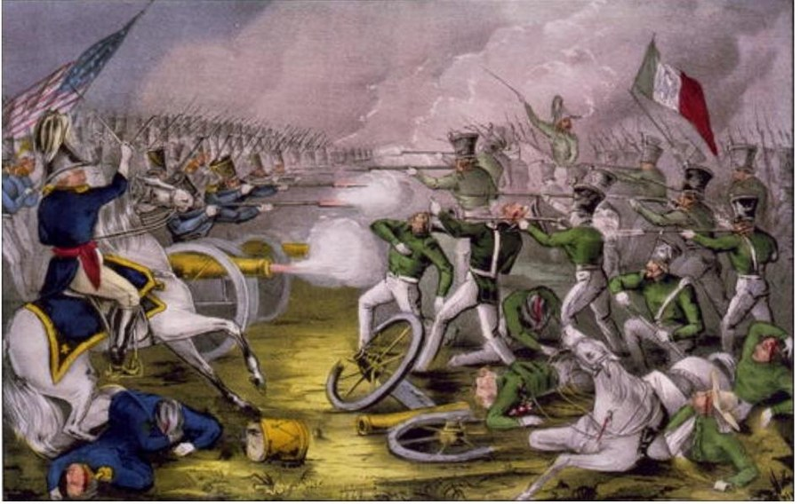
Lugar: La Angostura, cerca de Saltillo.
Causas→Consecuencias: avance de Santa Anna → retirada mexicana.
Desembarco y sitio de Veracruz
Estados Unidos abrió un segundo frente: el general Winfield Scott desembarcó cerca de Veracruz el 9 de marzo de 1847 y sitió el puerto, que fue bombardeado y tomado el 29 de marzo. Durante el sitio, los soldados estadounidenses empezaron a enfermar de fiebre amarilla. Veracruz era una plaza muy importante, y su caída permitió a Scott iniciar la marcha hacia la Ciudad de México. Esta campaña fue la más decisiva de la guerra.
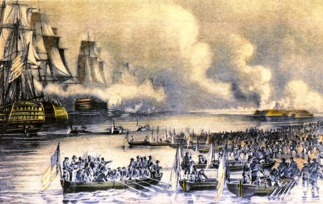
Lugar: Veracruz.
Causas→Consecuencias: plan de invadir el centro → camino a la capital.
Hacia la capital: Cerro Gordo, Padierna, Churubusco y Molino del Rey
Scott derrotó a Santa Anna en Cerro Gordo el 18 de abril de 1847 y siguió hacia la capital. En agosto se libraron las batallas de Padierna o Contreras (19–20 de agosto) y Churubusco (20 de agosto), a pocos kilómetros de la Ciudad de México. El 8 de septiembre se libró la batalla de Molino del Rey. En cada una, el ejército mexicano resistió, pero el estadounidense avanzó y quedó cerca de la capital.
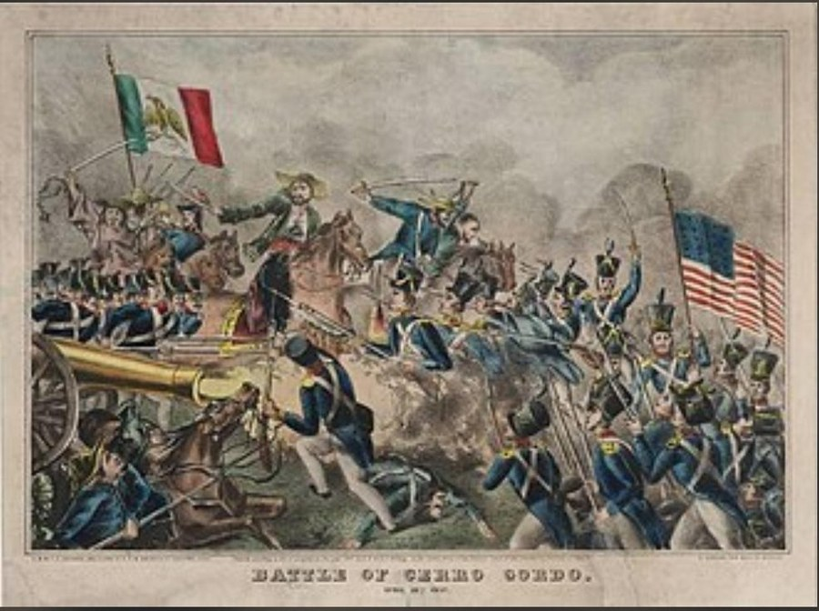
Lugar: Cerro Gordo, Padierna, Churubusco, Molino del Rey.
Causas→Consecuencias: avance estadounidense → asedio de la capital.
Chapultepec y toma de la capital
El ejército de Scott encontró el camino a la capital bloqueado por el Castillo de Chapultepec y lo asaltó el 13 de septiembre. Después de la resistencia mexicana en las calzadas, el 14 de septiembre las tropas estadounidenses ocuparon la Ciudad de México. Hubo resistencia también de los habitantes de la ciudad. La caída de la capital llevó al gobierno mexicano a abrir negociaciones para terminar la guerra. La tradición recuerda a los cadetes del Colegio Militar (Niños Héroes).
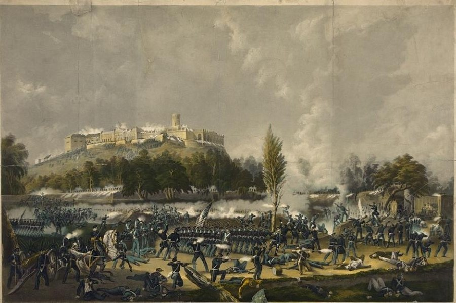
Lugar: Castillo de Chapultepec, Ciudad de México.
Causas→Consecuencias: asalto al castillo → ocupación de la capital.
Tratado de Guadalupe Hidalgo
El 2 de febrero de 1848 se firmó en Guadalupe Hidalgo, al norte de la Ciudad de México, el tratado que puso fin a la guerra. Nicholas Trist lo negoció por Estados Unidos, aunque Polk lo había llamado de regreso. México renunció a Texas y aceptó el Río Grande como frontera, y cedió un enorme territorio. Estados Unidos pagó 15 millones de dólares y asumió reclamaciones de sus ciudadanos. El Senado estadounidense lo aprobó el 10 de marzo, México el 19 de mayo y las ratificaciones se intercambiaron en Querétaro el 30 de mayo.
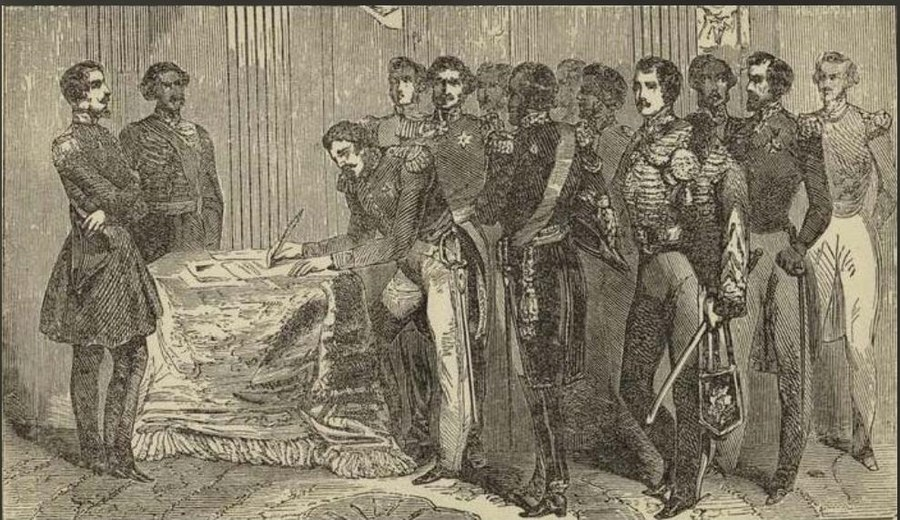
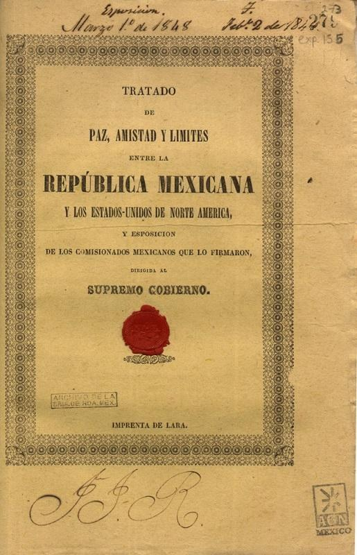
Lugar: Guadalupe Hidalgo, CDMX.
Causas→Consecuencias: ocupación de la capital → cambio de frontera.
| Nombre | Papel |
|---|---|
| James K. Polk | Presidente de EE. UU.; impulsó la expansión y pidió la guerra |
| Zachary Taylor | General; ganó Palo Alto, Resaca, Monterrey y Buena Vista |
| Winfield Scott | General; tomó Veracruz y la Ciudad de México |
| Antonio López de Santa Anna | General y presidente mexicano; comandó en la Angostura y en la defensa de la capital |
| Mariano Arista | General mexicano en Palo Alto y Resaca |
| Anastasio Torrejón y Pedro de Ampudia | Generales mexicanos (Thornton y Monterrey) |
| John Slidell y Nicholas Trist | Enviados de EE. UU. (misión de 1845 y tratado de 1848) |
| Valentín Gómez Farías, José Joaquín de Herrera y Mariano Paredes y Arrillaga | Políticos mexicanos de la época: reformas liberales, rechazo a Slidell y presidencia de 1846 |
| Luis G. Cuevas, Bernardo Couto y Miguel Atristáin | Representantes mexicanos en la negociación del Tratado de Guadalupe Hidalgo |
- Territorio: México cedió cerca de 525,000 millas cuadradas (unos 1.36 millones de km²); suele decirse que perdió alrededor del 55 % de su territorio, cifra que varía según se cuente Texas. Los territorios cedidos abarcaron los actuales California, Nevada, Utah, Nuevo México y Arizona, y partes de Colorado, Wyoming, Kansas y Oklahoma.
- Frontera: México renunció a Texas y se aceptó el Río Grande.
- Económicas: EE. UU. pagó 15 millones de dólares y asumió reclamaciones de sus ciudadanos.
- Personas: los mexicanos en esas zonas podían mudarse a México o recibir la ciudadanía estadounidense.
- Políticas: la derrota debilitó a Santa Anna y agravó la tensión entre conservadores y liberales.
| Antes | Después del Tratado |
|---|---|
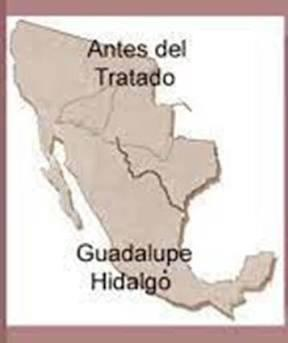 | 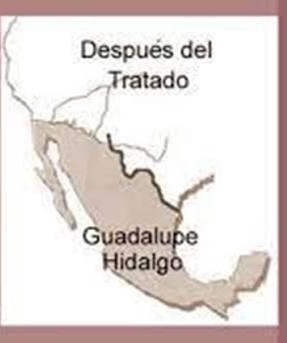 |
- Monterrey: 20–24 de septiembre (Britannica) o 21–24; la rendición se firmó después.
- Ocupación de la capital: 13 o 14 de septiembre de 1847
- Ratificación mexicana: 19 de mayo de 1848 o 19 de marzo.
- Anexión de Texas: resolución del 26 de febrero y estado el 29 de diciembre de 1845.
- Asunto Thornton: el número de muertos varía entre fuentes, por eso no se incluye.
Segunda Intervención Francesa
Segundo Imperio Mexicano
Después de la Guerra de Reforma, el país estaba arruinado y con una deuda externa grande; la más grande era con Inglaterra. El gobierno de Benito Juárez suspendió los pagos y eso dio pretexto a Francia, España y el Reino Unido para actuar. Después Francia siguió sola con la intervención, y la lucha terminó con la caída del Segundo Imperio.
Suspensión de pagos de la deuda
El 17 de julio de 1861 Benito Juárez decretó suspender por dos años los pagos de la deuda externa. México estaba arruinado después de la Guerra de Reforma y no podía pagar. La deuda más grande era con Inglaterra, y también había deudas con España y Francia. La medida fue el pretexto que usaron las potencias europeas para enviar fuerzas a México, aunque algunas fuentes señalan que Francia tenía objetivos más amplios que cobrar.

Lugar: Ciudad de México.
Causas→Consecuencias: crisis económica → presión extranjera.
Convención de Londres
El 31 de octubre de 1861 Inglaterra, Francia y España, la llamada Alianza Tripartita, se reunieron en la Convención de Londres para decidir qué medidas tomar contra México por la suspensión de pagos. Acordaron enviar fuerzas combinadas a México para exigir sus derechos como acreedores. El documento es el origen de la intervención, aunque pronto las posiciones de las tres potencias empezaron a separarse.
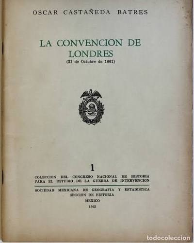
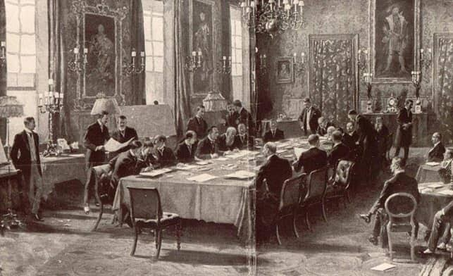
Lugar: Londres.
Causas→Consecuencias: deuda → envío de fuerzas a México.
Llegada a Veracruz y La Soledad
Las fuerzas españolas desembarcaron en Veracruz el 8 de diciembre de 1861, adelantándose a lo acordado; las francesas y británicas llegaron a principios de 1862. El 19 de febrero de 1862, el ministro mexicano Manuel Doblado firmó con el general español Juan Prim los preliminares de La Soledad, en los que se comprometían a respetar la independencia, la soberanía y el territorio de México. Con esto parecía posible evitar la guerra.
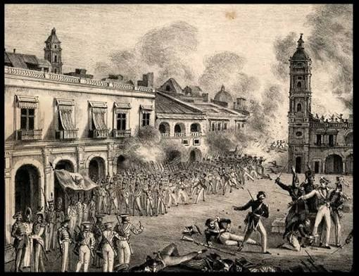
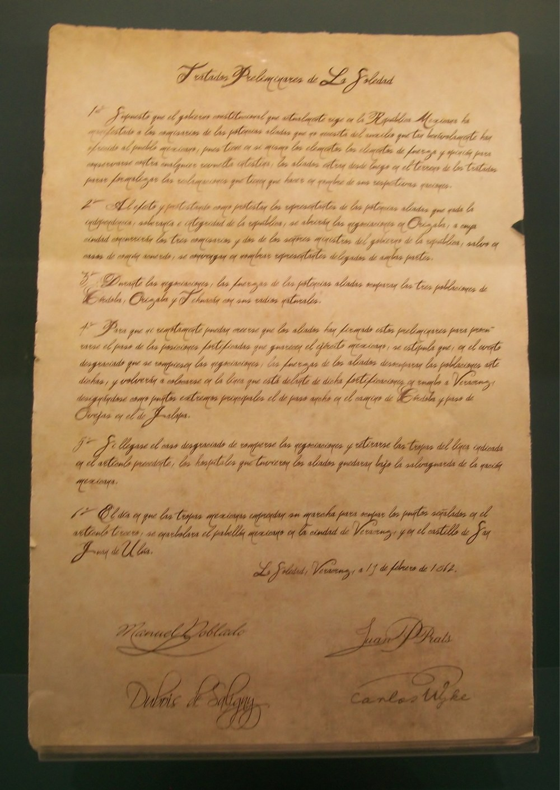
Lugar: Veracruz y La Soledad.
Causas→Consecuencias: negociación → acuerdo que Francia después desconoció.
Francia rompe la alianza
El 9 de abril de 1862 Francia rompió la alianza con Inglaterra y España e inició sus ataques contra México. Los ingleses y los españoles retiraron sus tropas del país. A finales de abril el general francés Lorencez desconoció los acuerdos de La Soledad y marchó hacia Puebla con la idea de llegar a la Ciudad de México. Desde entonces la intervención fue una guerra francesa contra la República.
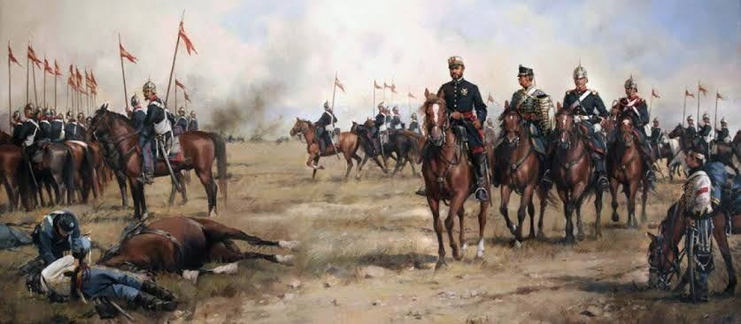
Lugar: Veracruz y camino a Puebla.
Causas→Consecuencias: metas francesas → fin de la alianza.
Batalla de Puebla
El Ejército de Oriente, dirigido por el general Ignacio Zaragoza, derrotó cerca de Puebla al ejército francés del conde de Lorencez, que llevaba unos 6,000 hombres y creía vencer rápido. Participaron también Porfirio Díaz, Miguel Negrete y Felipe Berriozábal. Lorencez se retiró el 8 de mayo. La victoria fue muy importante para los mexicanos porque vencieron a uno de los ejércitos más poderosos de la época, aunque no detuvo la invasión. Zaragoza murió meses después por enfermedad.
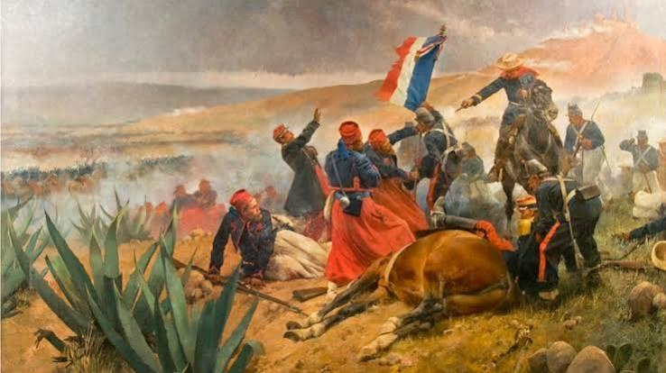
Lugar: Puebla.
Causas→Consecuencias: marcha francesa → victoria mexicana y refuerzos franceses.
Sitio y caída de Puebla
Francia reforzó su ejército y volvió. El general Élie Forey inició el sitio de Puebla el 16 de marzo de 1863. La ciudad estaba defendida por el general Jesús González Ortega. Después de dos meses de sitio, Puebla cayó el 17 de mayo de 1863. Las fuerzas francesas quedaron con el camino abierto hacia la capital. Fue una batalla muy dura que dejó la ciudad muy dañada.
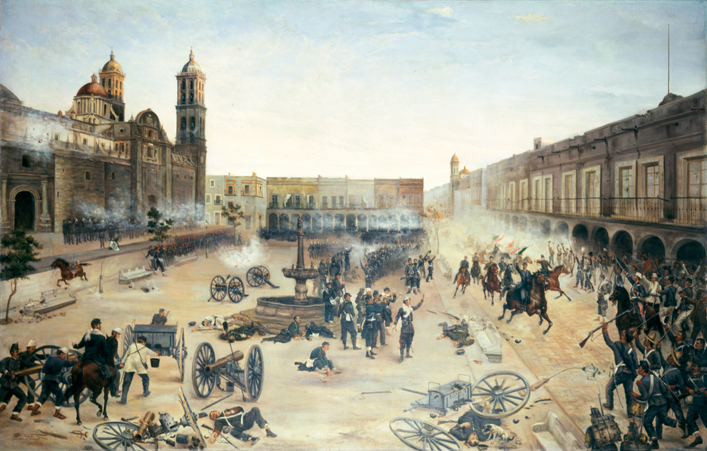
Lugar: Puebla.
Causas→Consecuencias: refuerzos franceses → caída de Puebla.
Ocupación de la capital y República errante
Ante el avance francés, Benito Juárez salió de la Ciudad de México el 31 de mayo de 1863. El 10 de junio las tropas francesas ocuparon la capital. Comenzó la llamada República errante, durante la cual el gobierno republicano se trasladó por distintas ciudades del país; por ejemplo, Juárez llegó a Chihuahua el 28 de agosto de 1864. Mientras tanto los republicanos organizaron la resistencia.
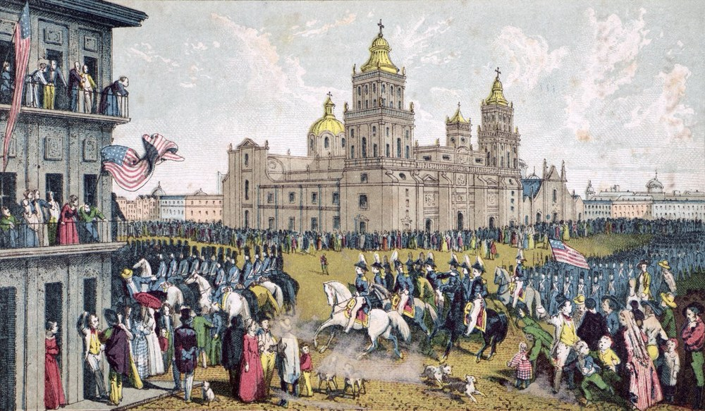
Lugar: Ciudad de México y norte del país.
Causas→Consecuencias: caída de Puebla → gobierno itinerante.
Un trono para Maximiliano
Los sectores monárquicos mexicanos apoyaron crear una monarquía, y Napoleón III respaldó la idea con su ejército. En 1863 se reunió una Asamblea de Notables y el trono fue ofrecido al archiduque austriaco Maximiliano de Habsburgo. Maximiliano fue proclamado emperador el 10 de abril de 1864 en el Castillo de Miramar. Esto convirtió la intervención en un proyecto político: establecer el Segundo Imperio Mexicano.
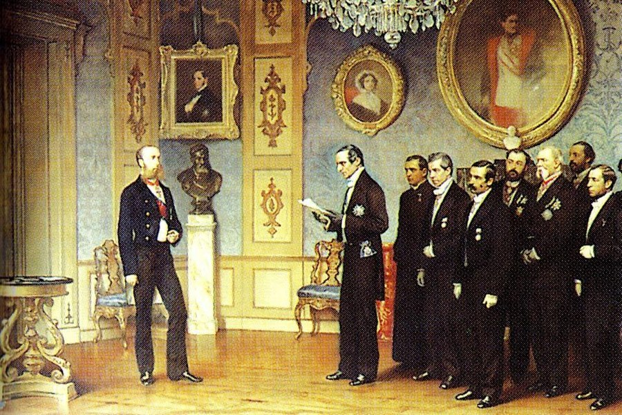
Lugar: México y Castillo de Miramar.
Causas→Consecuencias: intereses conservadores y franceses → monarquía.
Maximiliano y Carlota llegan a la capital
Maximiliano y su esposa Carlota de Bélgica llegaron a México en mayo de 1864 y el 12 de junio hicieron su entrada triunfal en la Ciudad de México. Comenzó el Segundo Imperio Mexicano, que duró de 1864 a 1867. Maximiliano trató de gobernar con apoyo conservador, pero el Imperio dependía de las tropas francesas y nunca controló todo el país. Su relación con conservadores, liberales y la Iglesia fue difícil, y falta ampliarla con fuente institucional.
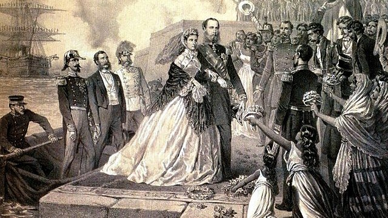
Lugar: Ciudad de México.
Causas→Consecuencias: apoyo francés → imperio frágil.
Estatuto Provisional del Imperio
En 1865 Maximiliano promulgó el Estatuto Provisional del Imperio Mexicano, un documento que reunía las leyes y disposiciones que regían el gobierno imperial y organizaba el Imperio. La fecha usada en este proyecto es el 10 de abril de 1865. El estatuto muestra que el Imperio quería parecer un gobierno organizado y legal.
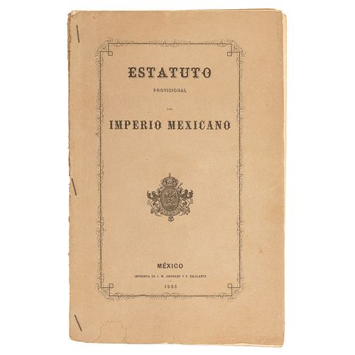
Lugar: Ciudad de México.
Causas→Consecuencias: necesidad de organizar el Imperio → base jurídica.
Resistencia republicana
El gobierno de Benito Juárez siguió resistiendo, con un gobierno itinerante, mientras los ejércitos republicanos peleaban contra franceses e imperiales. Entre los líderes estaban Mariano Escobedo, Ramón Corona, Porfirio Díaz y Vicente Riva Palacio. Al terminar la guerra civil de Estados Unidos en 1865, ese país empezó a dar ayuda material a los republicanos. En octubre de 1866 los republicanos ganaron batallas como Miahuatlán y La Carbonera. El Imperio perdió terreno.
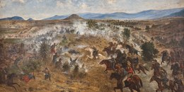
Lugar: norte, Oaxaca y otros estados.
Causas→Consecuencias: apoyo de EE. UU. → avance republicano.
Retirada francesa
En 1866 Napoleón III ordenó retirar las tropas francesas de México, presionado, entre otras cosas, por Estados Unidos. Una fuente indica que la retirada comenzó en la Ciudad de México el 1 de diciembre de 1866. Sin el ejército francés, el Imperio de Maximiliano quedó muy débil y su control se redujo a pocas ciudades, como México, Puebla y Querétaro. Otras causas, como el costo y la situación en Europa.
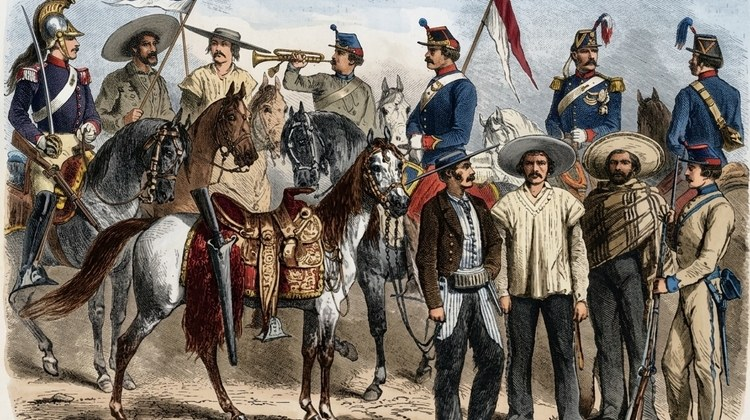
Lugar: México y Veracruz.
Causas→Consecuencias: presión internacional → abandono del Imperio.
Sitio de Querétaro
Maximiliano se instaló en Querétaro en febrero de 1867 con poco más de nueve mil soldados y algunos de sus mejores generales. Las fuerzas republicanas de Mariano Escobedo sitiaron la ciudad desde el 6 de marzo. El sitio duró hasta el 15 de mayo, cuando los republicanos tomaron Querétaro y Maximiliano fue hecho prisionero. Fue la batalla final del Segundo Imperio.
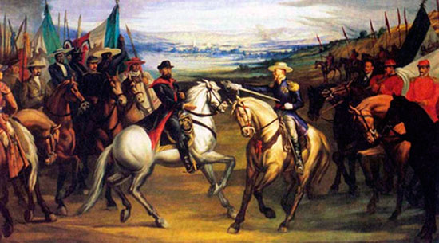
Lugar: Querétaro.
Causas→Consecuencias: retirada francesa → derrota imperial.
Fusilamiento de Maximiliano
Maximiliano fue juzgado por una corte marcial y fusilado el 19 de junio de 1867 junto con los generales conservadores Miguel Miramón y Tomás Mejía, en el Cerro de las Campanas, en Querétaro. Su muerte marcó el fin del proyecto monárquico y el triunfo de la República. Pocos días después, el 21 de junio, las tropas de Porfirio Díaz tomaron la Ciudad de México (otra fuente dice el 15 de junio).
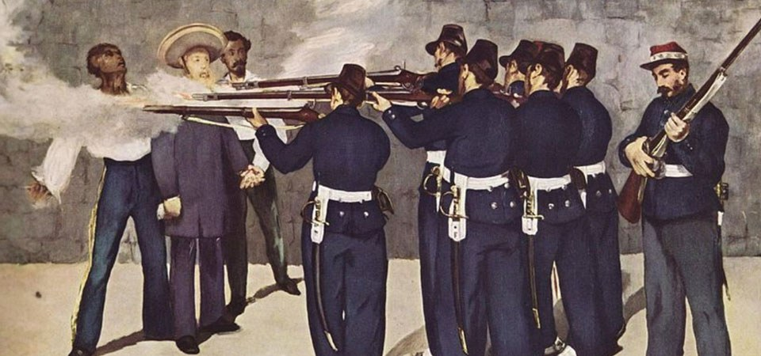
Lugar: Cerro de las Campanas, Querétaro.
Causas→Consecuencias: derrota imperial → fin del Imperio.
Restauración de la República
El 15 de julio de 1867 Benito Juárez entró de manera triunfal a la Ciudad de México, acompañado de Sebastián Lerdo de Tejada, José María Iglesias e Ignacio Mejía. Regresaba después de cuatro años de ausencia y restauraba la República. Con la derrota del Imperio, el Partido Conservador dejó de ser una fuerza política importante. El triunfo se vio como la consolidación de la independencia nacional.
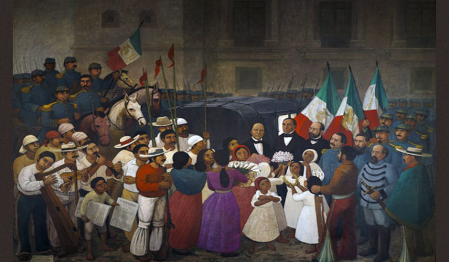
Lugar: Ciudad de México.
Causas→Consecuencias: derrota del Imperio → República restaurada.
| Nombre | Papel |
|---|---|
| Benito Juárez | Presidente de México; encabezó la República errante |
| Napoleón III | Emperador de Francia; impulsó la intervención y la retiró en 1866 |
| Maximiliano de Habsburgo | Emperador de México (1864-1867); fusilado en 1867 |
| Carlota de Bélgica | Esposa de Maximiliano; emperatriz |
| Ignacio Zaragoza | General; ganó la batalla de Puebla |
| Mariano Escobedo | General republicano; sitió y tomó Querétaro |
| Ramón Corona y Vicente Riva Palacio | Líderes republicanos |
| Porfirio Díaz | General republicano; participó en Puebla y en la toma de la capital |
| Miguel Miramón y Tomás Mejía | Generales conservadores fusilados con Maximiliano |
| Lorencez y Forey | Generales franceses (Puebla 1862 y 1863) |
- Políticas: cayó el Imperio, se restauró la República y el Partido Conservador perdió fuerza.
- Soberanía: se consolidó la independencia nacional.
- Militares: Puebla quedó muy dañada y hubo años de guerra.
- Diplomáticas: falta ampliar con fuente (relaciones con Francia y Estados Unidos después de 1867).
- Inicio del sitio de Querétaro: 6 de marzo (la mayoría) o 14 de marzo.
- Toma de la capital por los republicanos: 21 de junio o 15 de junio de 1867.
- Estatuto Provisional: el año está confirmado; el día 10 de abril falta confirmar.
- Retirada francesa: se ordena en 1866 y termina a principios de 1867.
Conclusión comparativa
| Primera Francesa | Norteamericana | Segunda Francesa | |
|---|---|---|---|
| Años | 1838–1839 | 1846–1848 | 1862–1867 |
| Países | Francia (con mediación británica) | Estados Unidos | Francia (al inicio con España y Reino Unido) |
| Causas | Reclamaciones económicas de franceses | Disputa por Texas y la frontera; expansión estadounidense | Suspensión de pagos de la deuda; intereses franceses y conservadores |
| Personajes | Santa Anna, Bustamante, Baudin, Deffaudis | Polk, Taylor, Scott, Santa Anna, Trist | Juárez, Napoleón III, Maximiliano, Zaragoza, Escobedo |
| Acontecimientos militares | Bloqueo y ataque a San Juan de Ulúa | Palo Alto, Monterrey, La Angostura, Veracruz, Chapultepec | Batalla de Puebla, sitio de Puebla, sitio de Querétaro |
| Cómo terminó | Tratado de Paz, 9 de marzo de 1839 | Tratado de Guadalupe Hidalgo, 2 de febrero de 1848 | Caída del Imperio y fusilamiento de Maximiliano, 1867 |
| Consecuencias para México | Pagó 600,000 pesos | Perdió cerca de la mitad de su territorio | Se restauró la República |
Similitudes: en las tres, potencias extranjeras aprovecharon la debilidad económica y política de México, y dos de ellas empezaron por deudas o reclamaciones. Diferencias: solo la Norteamericana causó pérdida de territorio, y solo la Segunda Francesa terminó con un Imperio derrotado por la República. En conjunto, mostraron los riesgos para la soberanía de México y reforzaron la defensa de la independencia.